5.2 Validation avec JOSM
Objectifs du cours
Cette section fournit :
- Une vue d’ensemble de la validation dans le JOSM, y compris des diapositives de présentation.
- Des instructions étape par étape pour pratiquer la validation dans le JOSM
Activités d’apprentissage
Aperçu général de la validation
La validation est un processus qui consiste à vérifier la qualité des données (dans ce cas, la qualité des données cartographiques) en termes d’exactitude, de cohérence, d’exhaustivité et d’anomalie. La validation est importante pour maintenir la qualité des données OSM. De nombreux aspects doivent être pris en compte lors de la validation, à savoir l’exactitude, la cohérence, l’exhaustivité et la détection des anomalies.
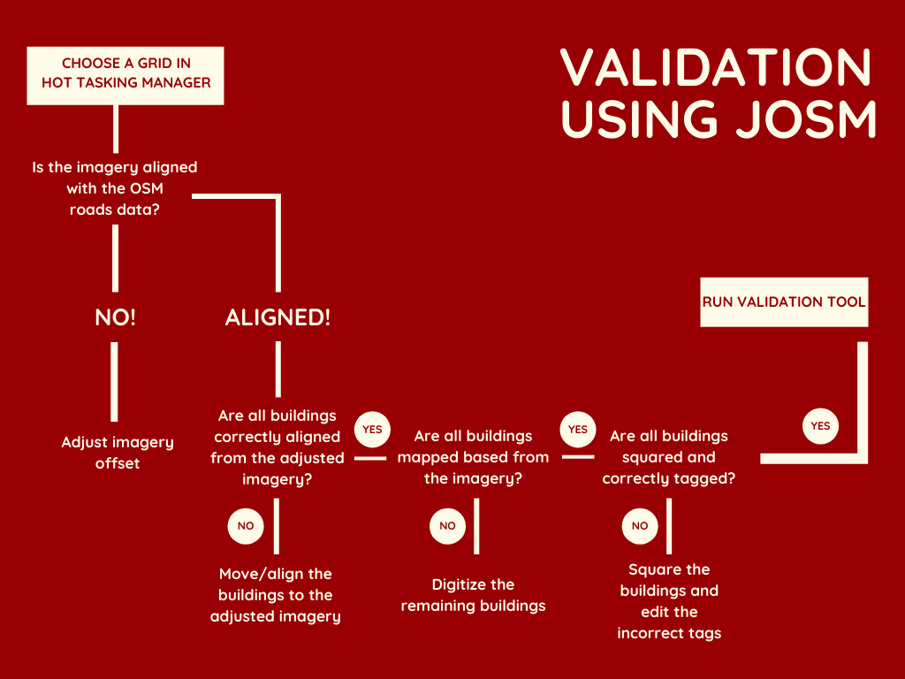
Lors de la vérification de la précision, vous devez vous assurer que les données cartographiques sont alignées sur l’imagerie et qu’elles sont correctes en termes de géométrie.
Pour la cohérence, s’assurer que tous les objets cartographiés ont une forme cohérente. Par exemple, lorsque vous trouvez une zone résidentielle, assurez-vous que tous les bâtiments sont tracés et orthogonalisés de manière cohérente.
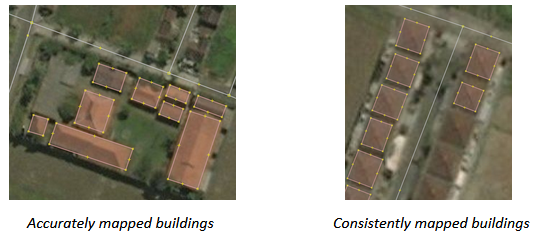
Pour la complétude, tout dépend des informations que vous souhaitez collecter lors de la cartographie et de la méthode de cartographie utilisée. Les informations collectées à l’aide de la méthode de cartographie à distance seront différentes des informations collectées par le biais d’une enquête sur le terrain. Les informations collectées à l’aide de la méthode de cartographie à distance seront très limitées puisque vous ne disposez que de l’imagerie satellite et des tracés gpx comme référence.
Pour l’anomalie, s’assurer qu’il n’y a pas d’objets cartographiés d’apparence anormale. Cela peut se faire en vérifiant les données OSM par des contrôles visuels et en les comparant à votre imagerie préférée.
Bien qu’une validation légère puisse être effectuée à l’aide de l’iD Editor, HOT recommande que la validation détaillée soit effectuée à l’aide de JOSM.
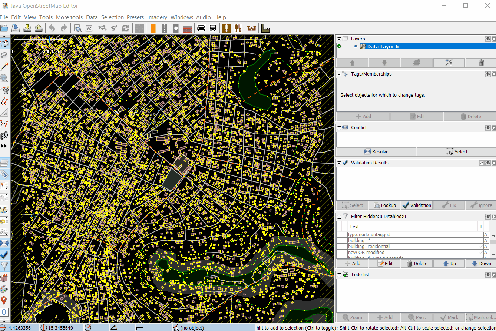
Pratique de validation
L’activité suivante couvre le processus de validation de mauvaises données OSM dans le JOSM. Cette activité utilise un fichier d’exemple qui peut être téléchargé ici [2].
Compétences et technologies nécessaires
- Ordinateur
- Connexion internet (pour le téléchargement des données)
- Compte OSM
- JOSM
- Exemple de fichier .osm
Temps estimé pour l’achèvement : 1 hour
Objectifs :
- Pouvoir comprendre le processus de validation des données OSM.
- Pouvoir effectuer la validation à l’aide des outils de validation sur le JOSM.
- Pouvoir corriger les erreurs courantes, les avertissements et les fautes constatés lors de la validation.
1. Ouvrir les données OSM
Après avoir téléchargé avec succès les données de l’échantillon, ouvrez le fichier validation_sample.osm dans votre JOSM en suivant les étapes suivantes :
- Cliquer sur le menu Fichier ➝ Open
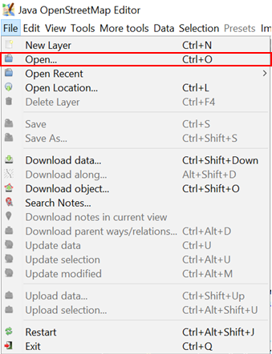
- Allez dans votre répertoire où vous avez enregistré validation_sample.osm. Sélectionnez le fichier validation_sample.osm, puis cliquez sur Ouvrir.
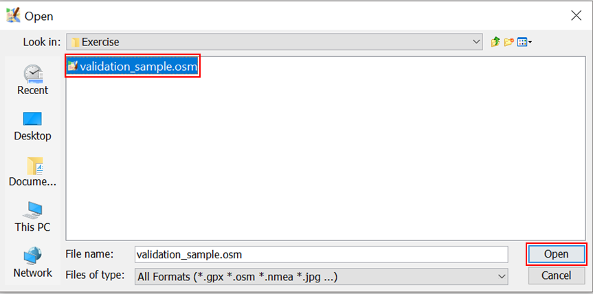
- Après avoir ouvert le fichier d’exercice, votre JOSM ressemblera à ceci :
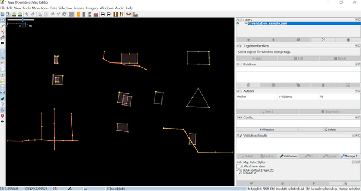
2. Utilisation des outils de validation de JOSM
JOSM fournit un validateur intégré qui vérifie et corrige les données cartographiques invalides, appelé Outils de validation. Après avoir vérifié l’exactitude, la cohérence, l’exhaustivité et les anomalies, exécutez ces outils de validation pour que les données cartographiques soient parfaitement valides. Pour commencer à utiliser les outils de validation, vous devez activer la fenêtre des résultats de validation en suivant les étapes suivantes:
- Cliquez sur le menu Windows ➝ Résultats de validation
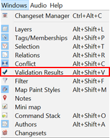
- Les fenêtres de résultats de validation apparaîtront sur le côté gauche de votre JOSM
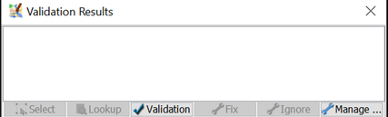
Après avoir activé la fenêtre des résultats de validation, vous pouvez maintenant commencer la validation en utilisant les outils de validation du JOSM. Téléchargez d’abord les données OSM en utilisant Slippy Map ou Tasking Manager, puis cliquez sur le bouton Validation dans la fenêtre des résultats de validation. Utilisons l’échantillon de données OSM pour un exercice.
- Pour exécuter la validation sur toutes les données de la couche de données actuelle, qui est validation_sample.osm, assurez-vous qu’aucune donnée n’est sélectionnée. Cliquez ensuite sur le bouton Validation dans la fenêtre des résultats de la validation. Une fois le processus de validation terminé, la fenêtre des résultats de la validation se remplit d’erreurs et d’avertissements. Le nombre d’erreurs et d’avertissements trouvés dépend de la qualité des données. Par exemple, sur cet échantillon de données OSM, vous trouverez une erreur et vingt-et-un avertissements.
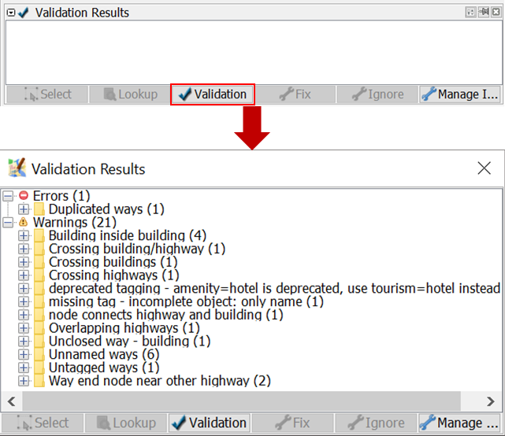
- Un nouveau calque appelé Erreurs de validation sera également ajouté à la fenêtre des calques. Cette couche mettra en évidence les erreurs et les avertissements trouvés - surbrillance rouge pour les erreurs et surbrillance jaune pour les avertissements.
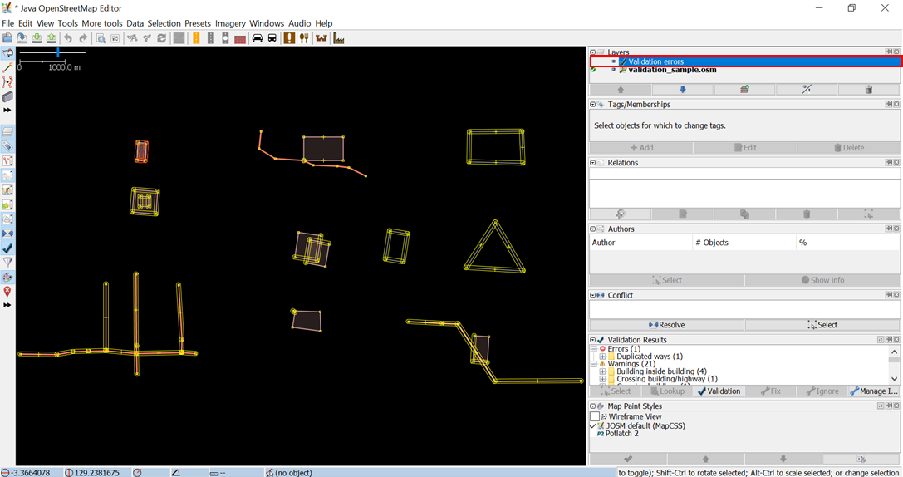
3. Correction des erreurs et des avertissements
Il est important de corriger les erreurs. Ne les ignorez pas. Si vos données OSM comportent des erreurs, vous ne pourrez pas les télécharger dans le serveur OSM tant que vous n’aurez pas corrigé les erreurs. Certaines erreurs peuvent être corrigées automatiquement à l’aide du bouton Fix dans les fenêtres de résultats de validation. Les avertissements sont des problèmes qu’il est important de corriger, mais dans certains cas, tels que “Unnamed Ways”, ils sont tolérables. Dans la plupart des cas, les avertissements doivent être corrigés manuellement. Essayons maintenant de corriger les erreurs et les avertissements trouvés dans validation_sample.osm. Il y a une erreur et vingt-et-un avertissements trouvés sur validation_sample.osm. Il s’agit de :
- Erreur: Routes dupliquées (1)
- Avertissement : Bâtiment à l’intérieur d’un bâtiment (4)
- Avertissement: Croisement bâtiment/routes (1)
- Avertissement: Croisement de bâtiment (1)
- Avertissement: Croisement de route (1)
- Avertissement : balisage obsolète - amenity=hotel est obsolète, utilisez tourism=hotel à la place (1)
- Avertissement : étiquette manquante - objet incomplet : seulement le nom (1)
- Avertissement : Le nœud relie la route et le bâtiment (1)
- Avertissement: routes se chevauchant (1)
- Avertissement : Routes non fermées- building (1)
- Avertissement: Routes sans nom (6)
- Avertissement: Routes sans balises (1)
- Avertissement : Nœud d’extrémité près d’une autre route (2)
Maintenant, corrigeons toutes les erreurs et tous les avertissements un par un.
3.1 Correction de l’erreur : chemins dupliqués
L’erreur “Chemins dupliqués” apparaît lorsque des chemins sont dupliqués. Cela est généralement dû à une connexion internet instable lors du téléchargement des données OSM sur le serveur OSM. Pour corriger les erreurs ou les avertissements, vous devez d’abord sélectionner l’erreur ou l’avertissement que vous souhaitez corriger. Dans la fenêtre des résultats de validation, cliquez sur l’icône + pour que la fenêtre ressemble à l’image ci-dessous.
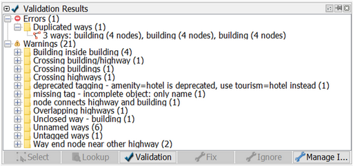
Sélectionnez les objets dupliqués et cliquez avec le bouton droit de la souris ➝ Zoom sur le problème pour zoomer et voir les objets dupliqués. Le canevas de votre carte sera zoomé sur les objets dupliqués. Heureusement, les voies dupliquées peuvent être automatiquement corrigées. Après avoir sélectionné les objets dupliqués, cliquez sur Réparer. Voilà, votre erreur est corrigée !
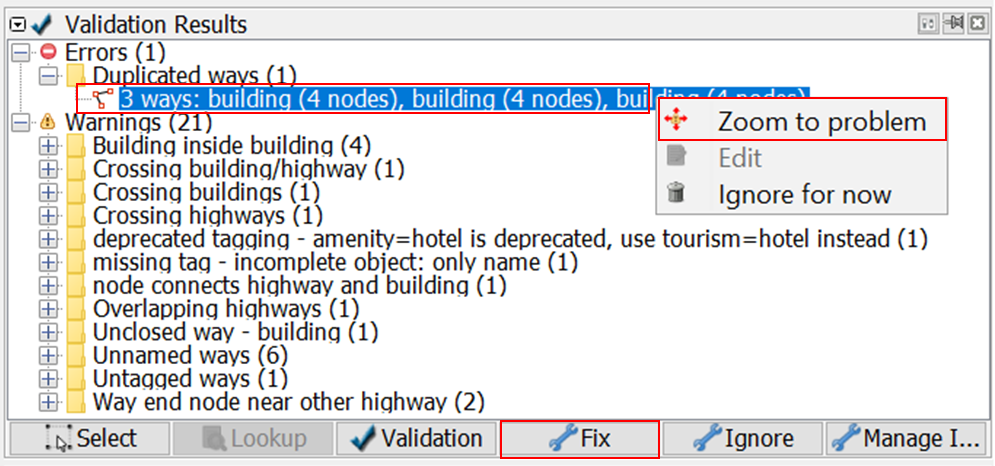
3.2 correction de l’avertissement: Building inside building
L’avertissement “bâtiment à l’intérieur d’un bâtiment” apparaît lorsqu’un bâtiment se trouve à l’intérieur d’un autre bâtiment. Pour y remédier, allez à l’avertissement “bâtiment à l’intérieur d’un bâtiment” dans la fenêtre des résultats de la validation, cliquez sur l’icône + pour que l’avertissement ressemble à l’image ci-dessous.
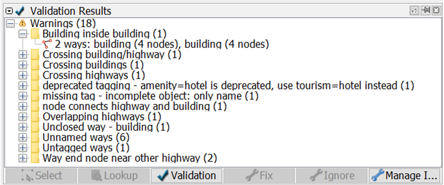
Sélectionnez les objets énumérés sous l’avertissement Bâtiment à l’intérieur d’un bâtiment et cliquez avec le bouton droit de la souris ➝ Zoom sur le problème pour zoomer et voir les objets. Le canevas de la carte est zoomé sur les objets.
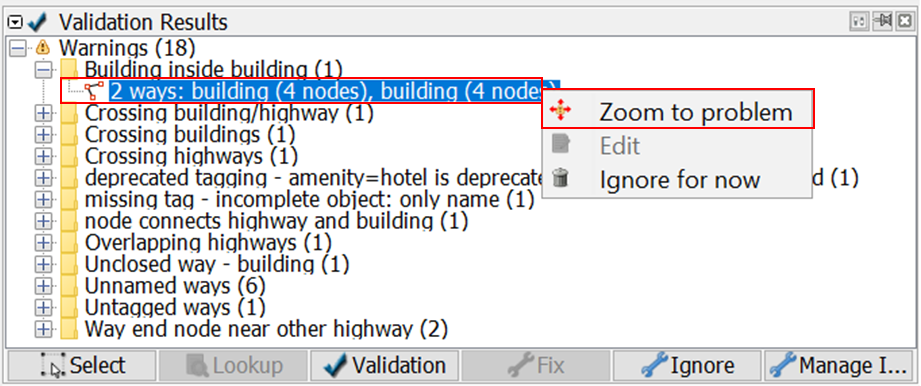
La plupart des avertissements doivent être corrigés manuellement. Pour corriger un bâtiment à l’intérieur d’un autre, il suffit de supprimer l’un des bâtiments. Pour déterminer lequel doit être supprimé, regardez l’imagerie et décidez avec soin lequel doit être supprimé. Voilà, vous venez de réparer un bâtiment à l’intérieur d’un autre bâtiment.
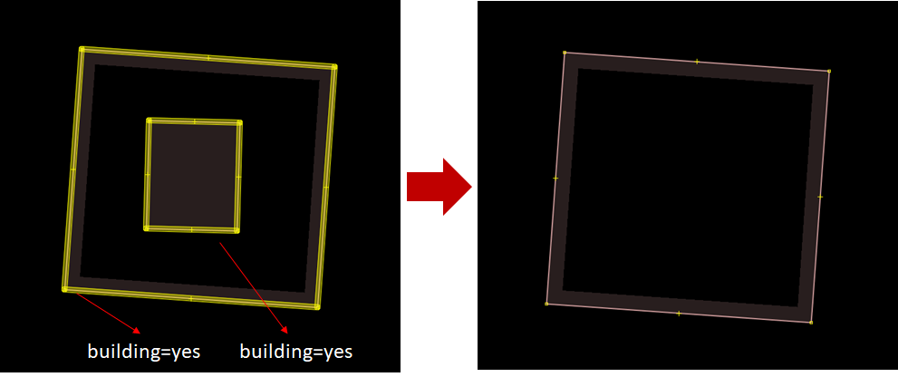
3.3 Correction de l’avertissement : croisement bâtiment/chemins
L’avertissement “croisement bâtiment/autoroute” apparaît lorsqu’un bâtiment croise une autoroute. Pour résoudre ce problème, allez à l’avertissement “croisement bâtiment/autoroute” dans la fenêtre des résultats de validation, cliquez sur l’icône + pour que l’avertissement ressemble à l’image ci-dessous.
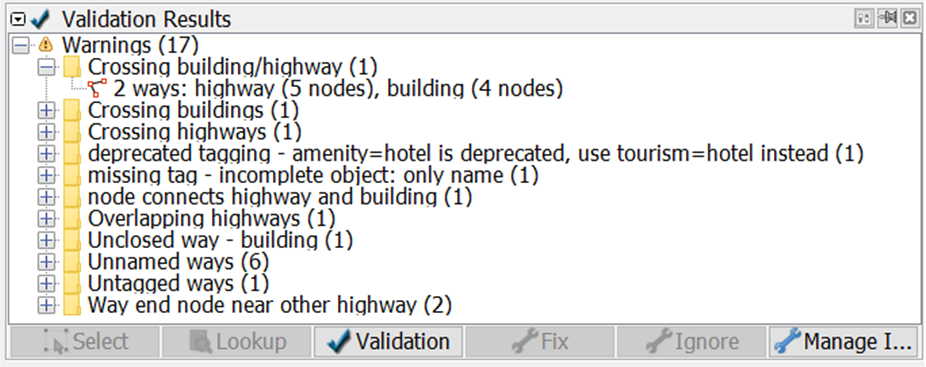
Sélectionnez les objets énumérés sous l’avertissement Bâtiment de franchissement/autoroute et cliquez avec le bouton droit de la souris ➝ Zoom sur le problème pour zoomer et voir les objets. Le canevas de la carte se rapproche des objets.
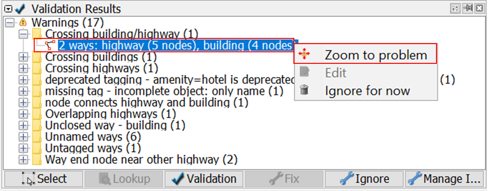
Pour corriger le croisement bâtiment/autoroute, il suffit de déplacer l’un des objets croisés, soit le bâtiment, soit le segment/nœud de l’autoroute. Pour décider quel objet doit être déplacé, veuillez jeter un coup d’œil à l’imagerie.
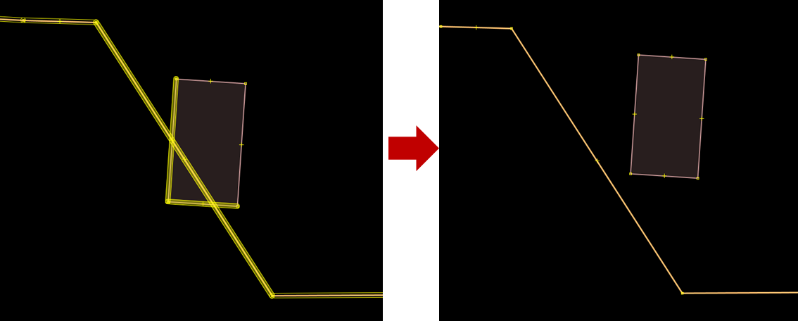
3.4 Correction de l’avertissement : bâtiments qui se croisent
L’avertissement relatif aux bâtiments qui se croisent apparaît lorsque deux bâtiments ou plus se chevauchent. Pour y remédier, allez à l’avertissement de croisement de bâtiments dans la fenêtre des résultats de validation, cliquez sur l’icône + pour qu’il ressemble à l’image ci-dessous.
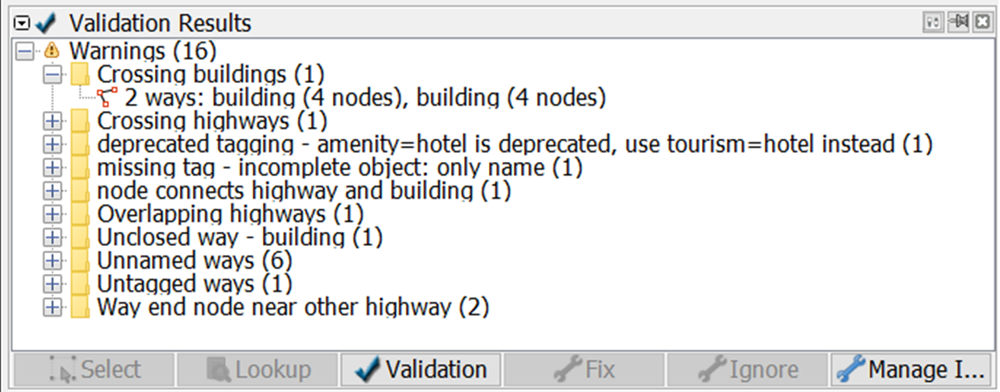
Sélectionnez les objets énumérés sous l’avertissement Bâtiments de franchissement et cliquez avec le bouton droit de la souris ➝ Zoom sur le problème pour zoomer et voir les objets. Le canevas de votre carte sera zoomé sur les objets.
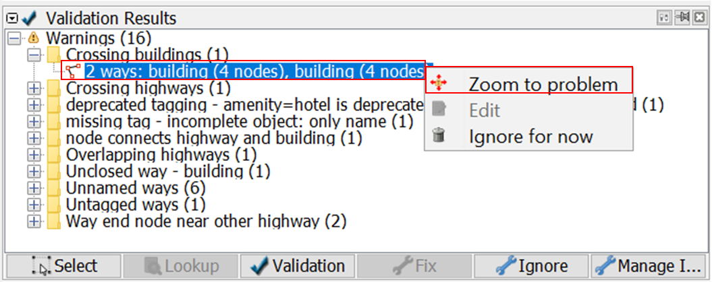
Pour réparer les bâtiments qui se croisent, il suffit de déplacer l’un des bâtiments qui se chevauchent de manière à ce qu’ils ne se chevauchent plus. Pour déterminer quels bâtiments doivent être déplacés, regardez l’imagerie.
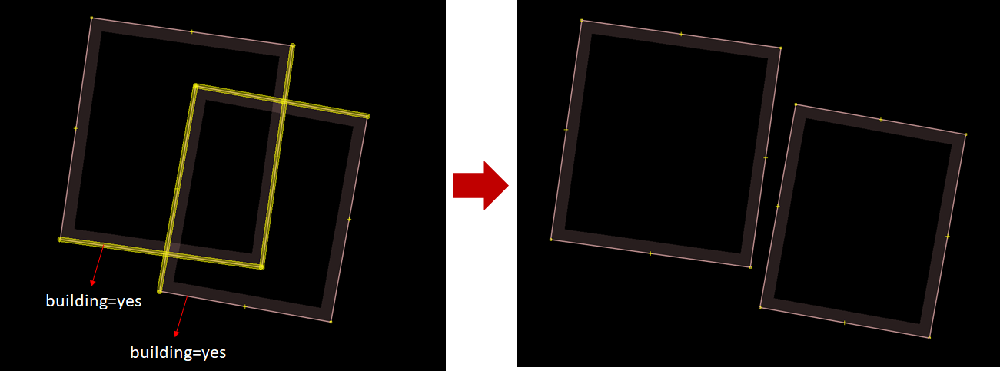
3.5 Corrections de l’avertissement: Chemins qui se croisent
L’avertissement de croisement d’autoroutes apparaît lorsqu’il y a des autoroutes qui se croisent sans qu’il y ait de nœud de croisement. Pour y remédier, allez à l’avertissement de croisement d’autoroutes dans la fenêtre des résultats de validation, cliquez sur l’icône + pour qu’il ressemble à l’image ci-dessous.
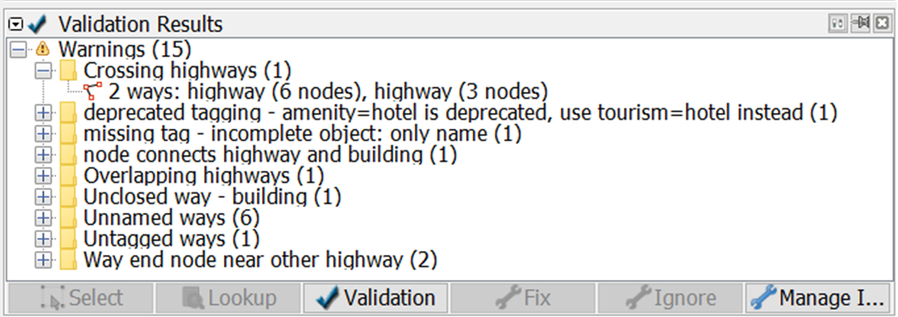
Sélectionnez les objets répertoriés sous l’avertissement Autoroutes de liaison et cliquez avec le bouton droit de la souris ➝ Zoom sur le problème pour zoomer et voir les objets. Le canevas de la carte fait un zoom sur les objets.
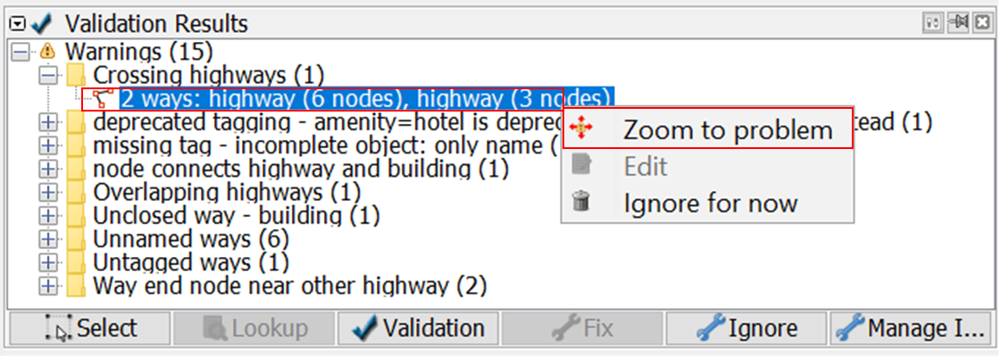
Pour réparer les autoroutes qui se croisent, il suffit d’ajouter un nœud de croisement à l’intersection de l’autoroute. Pour ajouter un nœud à l’intersection, vous pouvez utiliser les outils additionnels de JOSM, mais vous devez d’abord activer le plugin utilsplugins2. Vous pouvez aller dans le menu Préférences➝ Plugins, chercher utilsplugins2 et cocher utilsplugin2.
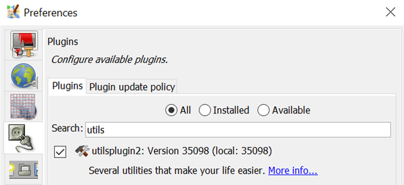
Pour ajouter un nœud à l’intersection, sélectionnez les deux autoroutes qui se croisent, et allez dans le menu More tools ➝ Add nodes at intersections (Plus d’outils ➝ Ajouter des nœuds aux intersections). Et voilà, vos autoroutes ont maintenant un nœud d’intersection.
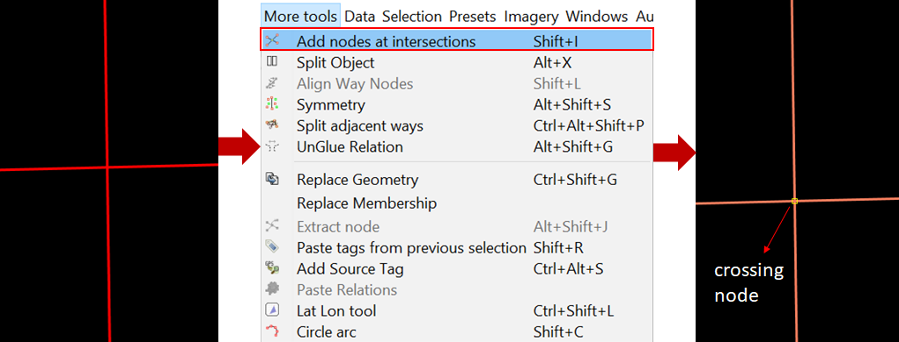
3.6 Correction de l’avertissement : balisage obsolète
L’avertissement de balisage déprécié apparaît lorsqu’un ou plusieurs objets de vos données OSM utilisent un balisage déprécié. Pour y remédier, allez sur l’avertissement de marquage obsolète dans la fenêtre des résultats de validation, cliquez sur l’icône + pour qu’il ressemble à l’image ci-dessous.
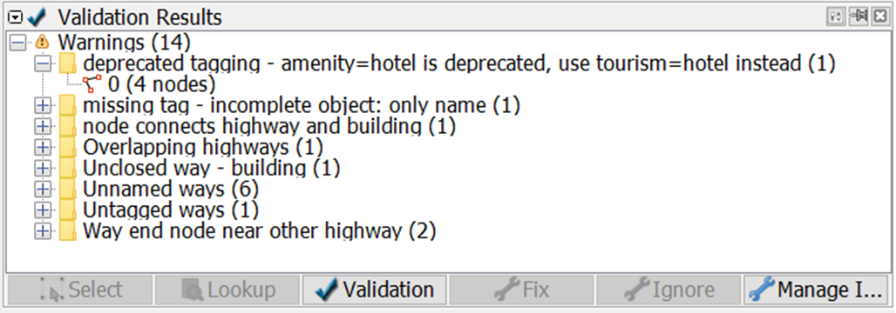
Sélectionnez les objets répertoriés sous l’avertissement “deprecated tagging” et cliquez avec le bouton droit de la souris ➝ Zoom to problem pour zoomer et voir les objets. Le canevas de votre carte sera zoomé sur les objets.
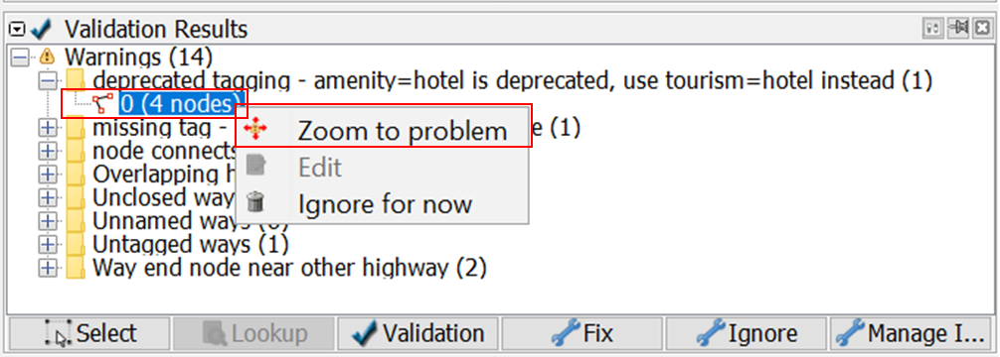
Heureusement, le balisage obsolète peut être corrigé automatiquement à l’aide du bouton Fixer. Après avoir sélectionné l’objet dont le balisage est obsolète, appuyez sur le bouton Réparer. Le JOSM remplacera automatiquement la balise obsolète par la nouvelle.
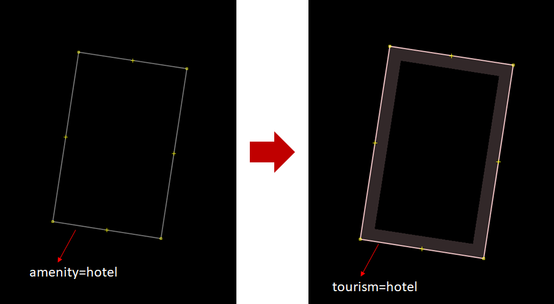
3.7 Correction de l’avertissement : balisage manquant
L’avertissement de balise manquante apparaît lorsqu’un ou plusieurs objets n’ont pas de balise ou que la balise est incomplète. Pour y remédier, allez à l’avertissement de balise manquante dans la fenêtre des résultats de validation, cliquez sur l’icône + pour qu’il ressemble à l’image ci-dessous.
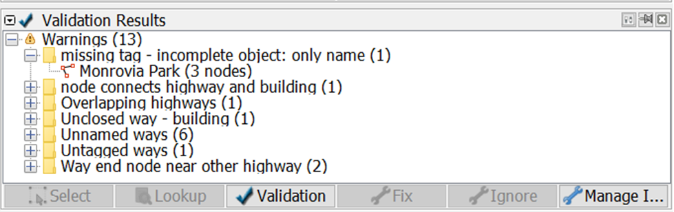
Sélectionnez les objets répertoriés sous la balise d’avertissement manquante et cliquez avec le bouton droit de la souris ➝ Zoom sur le problème pour zoomer et voir les objets. Le canevas de la carte est zoomé sur les objets.
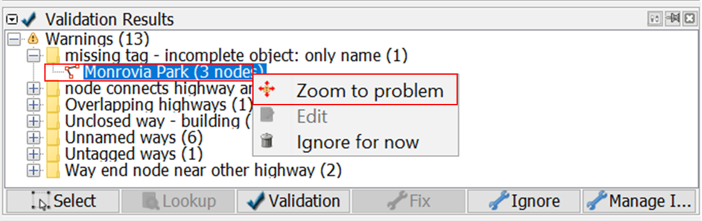
Dans ce cas, l’objet “Monrovia Park” n’a que l’étiquette nom. Il n’a pas la balise qui l’identifie en tant que parc. Ce que vous devez faire, c’est simplement ajouter une balise pour définir qu’il s’agit d’un parc, nommé Monrovia Park. Pour ajouter une balise, cliquez sur le menu Presets ➝ Search preset… et recherchez Park. Sélectionnez celui qui correspond au type de parc que vous cartographiez, dans ce cas vous pouvez sélectionner Geography/Landuse/Park, puis cliquez sur Select. Laissez le nom tel quel, puis cliquez sur Appliquer le préréglage.
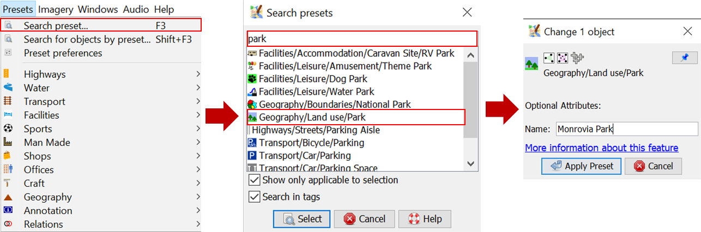
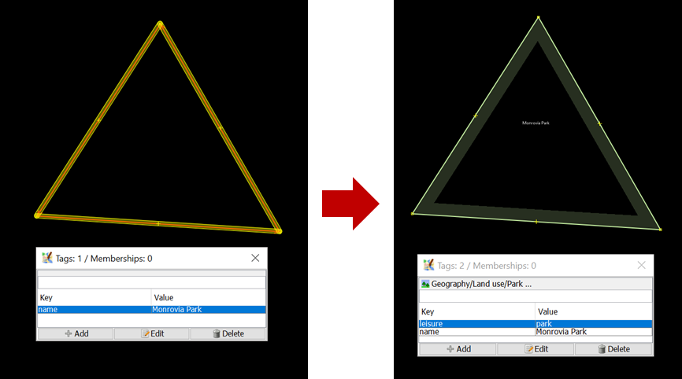
3.8 Correction de l’avertissement : Le nœud reliant la route et le bâtiment
L’avertissement “Node connects highway and building” apparaît lorsqu’un nœud de bâtiment est connecté à l’autoroute. Pour résoudre ce problème, allez à l’avertissement “Node connects highway and building” dans la fenêtre “Validation Results”, cliquez sur l’icône + pour qu’il ressemble à l’image ci-dessous.
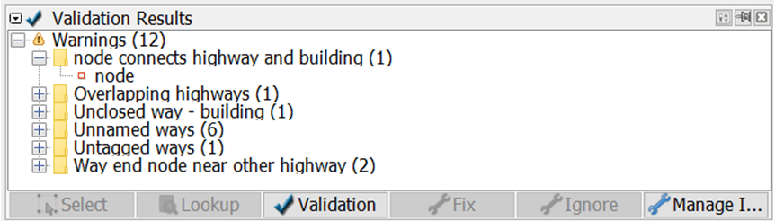
Sélectionnez les objets listés sous le nœud d’avertissement relie l’autoroute et le bâtiment et cliquez avec le bouton droit de la souris ➝ Zoom sur le problème pour zoomer et voir les objets. Le canevas de la carte est zoomé sur les objets.
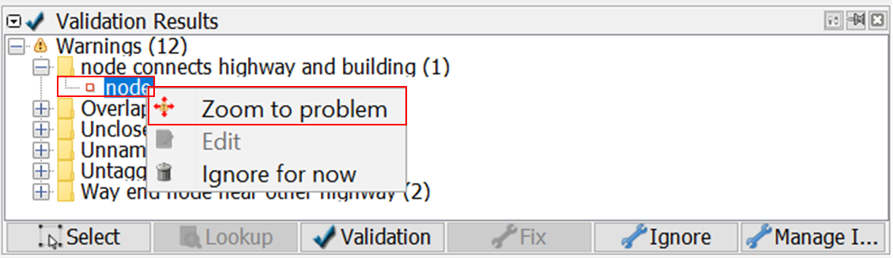
Pour résoudre ce problème, séparez simplement les nœuds connectés en les sélectionnant d’abord, puis en cliquant sur le menu Outils ➝ Dissocier les voies ou en appuyant sur la touche G du clavier pour obtenir un raccourci. Après avoir séparé les nœuds connectés, n’oubliez pas de déplacer soit l’ensemble du bâtiment, soit le nœud de l’autoroute, car les deux nœuds se chevauchent toujours.
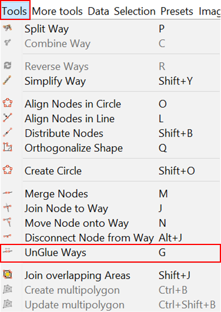
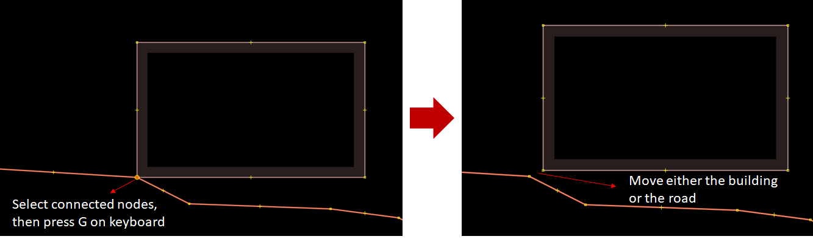
3.9 Correction de l’avertissement : routes se chevauchant
Les autoroutes qui se chevauchent apparaissent lorsqu’il y a des autoroutes qui se chevauchent les unes les autres. Pour y remédier, allez à l’avertissement relatif aux autoroutes qui se chevauchent dans la fenêtre des résultats de la validation, cliquez sur l’icône + pour qu’elle ressemble à l’image ci-dessous.
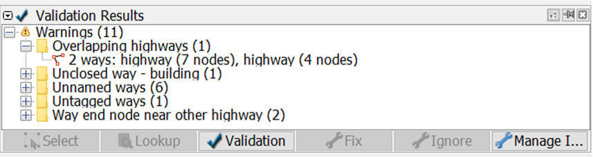
Sélectionnez les objets répertoriés sous l’avertissement autoroutes qui se chevauchent et cliquez avec le bouton droit de la souris ➝ Zoom sur le problème pour zoomer et voir les objets. Le canevas de votre carte sera zoomé sur les objets.
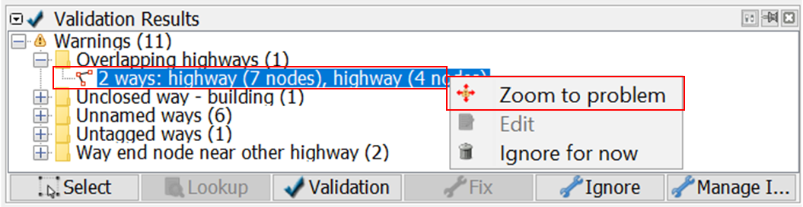
Pour corriger cet avertissement, vous devez tout d’abord diviser le segment de l’autoroute qui se chevauche. Sélectionnez un nœud final où les autoroutes se chevauchent, puis cliquez sur le menu Outils ➝ Séparer ou appuyez sur la touche P du clavier pour obtenir un raccourci. Sélectionnez l’autre nœud terminal où les autoroutes se chevauchent, puis cliquez sur le menu Outils ➝ Séparer ou appuyez à nouveau sur la touche P du clavier. Les segments qui se chevauchent sont maintenant divisés. Tout ce que vous avez à faire maintenant est de supprimer le segment chevauché en sélectionnant le segment et en appuyant sur la touche delete de votre clavier.
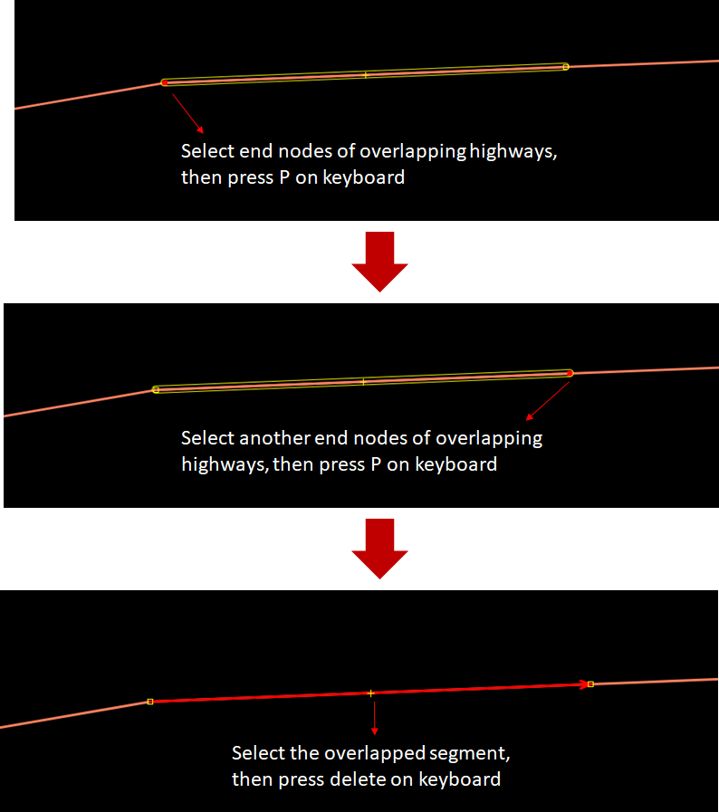
3.10 Correction de l’avertissement : chemin et bâtiment non fermés
L’avertissement “Unclosed way” - building apparaît lorsqu’un ou plusieurs bâtiments sont dessinés en tant que polygone non fermé. Cela se produit lorsque vous dessinez un bâtiment manuellement à l’aide des outils de nœuds sans outils de construction et que le premier nœud et le dernier nœud ne sont pas fusionnés. Pour résoudre ce problème, allez à l’avertissement de bâtiment non fermé dans la fenêtre des résultats de validation, cliquez sur l’icône + pour qu’il ressemble à l’image ci-dessous.
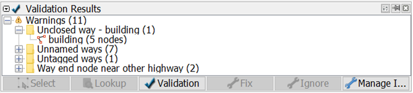
Sélectionnez les objets énumérés sous l’avertissement voie non fermée - bâtiment et cliquez avec le bouton droit de la souris ➝ Zoom sur le problème pour agrandir et voir les objets. Le canevas de votre carte sera zoomé sur les objets.
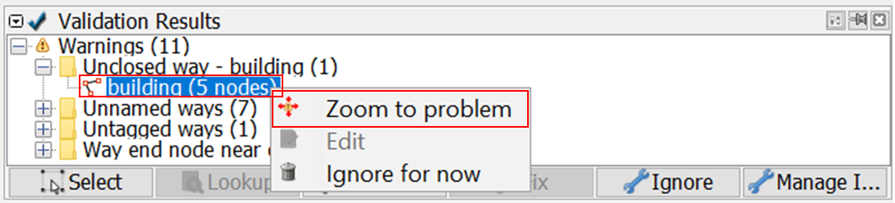
Pour y remédier, sélectionnez le premier nœud et le dernier nœud du bâtiment et fusionnez-les en cliquant sur le menu Outils ➝ Fusionner les nœuds ou en appuyant sur la touche M du clavier. Et voilà, votre bâtiment est maintenant un polygone fermé.
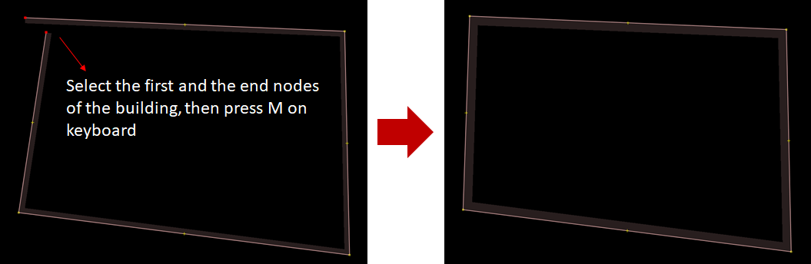
3.11 Correction de l’avertissement: routes non fermées
L’avertissement “Voies sans nom” apparaît lorsqu’une ou plusieurs autoroutes (routes principales) n’ont pas de nom. Cet avertissement fait partie des avertissements tolérables, vous pouvez donc l’ignorer. Si vous connaissez le nom de la route, vous pouvez ajouter le nom de la route en ajoutant un nom de balise à la route. Cependant, si vous ne connaissez pas le nom, laissez-le tel quel plutôt que de donner un nom aléatoire qui pourrait induire en erreur. Pour ignorer cet avertissement, vous pouvez le laisser tel quel ou le placer dans votre liste d’ignorants afin qu’il n’apparaisse plus lors de vos prochaines validations. Cliquez sur l’avertissement “Voies sans nom” dans la liste des avertissements, puis cliquez sur Ignorer et sur Groupe entier.
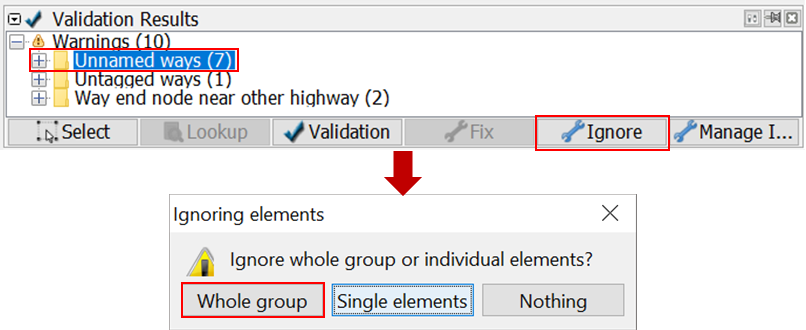
Si vous changez d’avis, vous pouvez toujours le réintégrer dans votre liste d’avertissements afin qu’il apparaisse à nouveau lors de la validation. Pour ce faire, cliquez sur Gérer les avertissements ignorés, puis cliquez avec le bouton droit de la souris sur l’avertissement que vous souhaitez réintégrer et choisissez Ne pas ignorer.
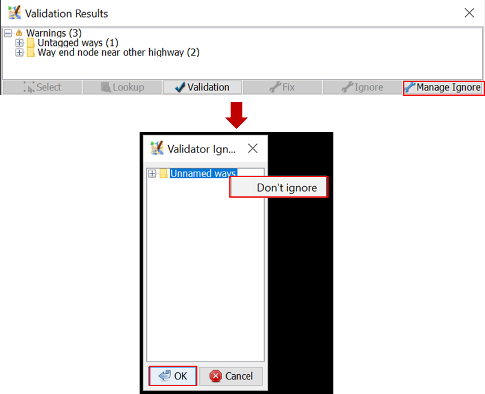
3.12 Correction de l’avertissement: chemin sans balise
L’avertissement “Untagged ways” apparaît lorsqu’un objet n’est pas marqué. Pour y remédier, allez à l’avertissement des voies non marquées dans la fenêtre des résultats de validation, cliquez sur l’icône + pour qu’il ressemble à l’image ci-dessous.
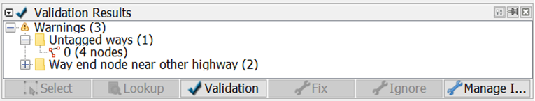
Sélectionnez les objets répertoriés sous l’avertissement voies non marquées et cliquez avec le bouton droit de la souris ➝ Zoom sur le problème pour zoomer et voir les objets. Le canevas de votre carte sera zoomé sur les objets.
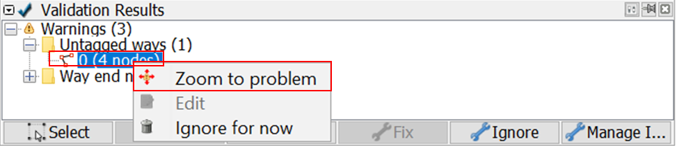
Pour y remédier, il suffit d’ajouter une balise/un préréglage à l’objet. Jetez un coup d’œil à l’imagerie pour décider de la balise à ajouter à l’objet. Sélectionnez l’objet, puis allez dans le menu Preset et sélectionnez la balise qui convient à l’objet. Par exemple, si cet objet s’avère être un hôpital, ajoutez la balise/présélection hôpital.
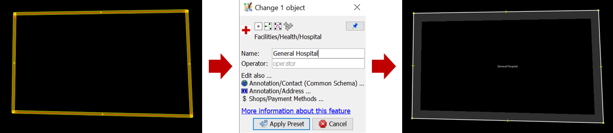
3.13 Correction de l’avertissement : Noeud d’extrémité près d’une route
Pour corriger le nœud d’extrémité de voie près d’une autre autoroute, aller au nœud d’extrémité de voie près d’une autre autoroute dans la fenêtre des résultats de validation, cliquez sur l’icône + de façon à ce qu’elle ressemble à l’image ci-dessous.
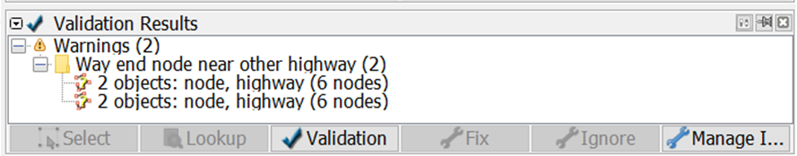
Sélectionnez les objets répertoriés sous l’avertissement voies non marquées et cliquez avec le bouton droit de la souris ➝ Zoom sur le problème pour zoomer et voir les objets. Le canevas de votre carte sera zoomé sur les objets.
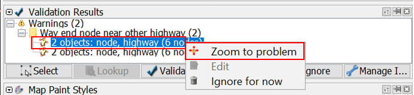
Pour y remédier, sélectionnez le nœud final et activez le mode Dessin en appuyant sur la touche A du clavier. Dessinez ensuite la route de manière à ce qu’elle soit connectée à la route voisine.
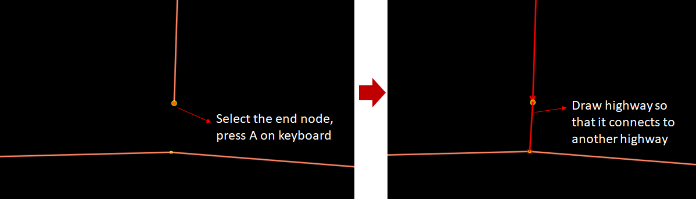
[Quiz] Testez vos connaissances
Type de quiz : choix multiples
-
Quelle est la fonction de l’outil de validation dans le JOSM?
a. Vérification automatique du nombre d’objets
b. Vérification de l’exhaustivité des données d’attributs dans OSM
c. Vérifier la qualité des données OSM en affichant les erreurs et les avertissements
d. Vérification manuelle de l’exactitude des objets
Type de quiz : glisser-déposer dans le texte
[2] sont importantes à corriger. Vous ne devez pas les [3]. Si vous ne pouvez pas le corriger, vous ne pourrez pas le télécharger dans le serveur OSM. Alors que vous pouvez ignorer [4] en fonction de son type. Les deux types vous donnent des informations sur certains éléments qui doivent être [5] dans vos données.
[a] Erreurs [b] Ignorer [c]Avertissements [d] Réparer
Type de quiz : correspondance
Examinez l’erreur et les avertissements ainsi que la solution correspondante. Identifiez les problèmes auxquels le passage fait référence:
-
Cet avertissement est le plus fréquemment rencontré lors de la validation. La plupart des utilisateurs d’OpenStreetMap numérisent deux bâtiments de manière trop rapprochée, au point qu’ils peuvent partager une ligne ou même se chevaucher l’un l’autre. Pour corriger cet avertissement, il suffit de déplacer ou de supprimer l’un des bâtiments qui se chevauchent.
a. Construction de nœuds dupliqués
b. voies non nommées
c. bâtiments se croisant
-
Cet avertissement apparaît lorsque deux lignes ou deux autoroutes se chevauchent sans qu’il y ait de nœud d’intersection entre ces lignes ou ces autoroutes. Pour corriger cet avertissement, il suffit d’ajouter un nœud d’intersection entre ces lignes/autoroutes.
a. chemins se croisant
b. chemins sans nom
c. bâtiment se croisant
-
Il indique qu’il existe une voie ou une route sans nom. Si vous connaissez le nom de la rue, vous devez le mettre à jour. Cependant, dans la plupart des cas, vous pouvez simplement ignorer cet avertissement si vous ne connaissez pas l’endroit. La plupart des cartographes qui réalisent leurs cartes à distance n’ont généralement pas de connaissances locales leur permettant de connaître le nom des routes.
a. Nœuds de bâtiment dupliqué
b. chemin sans nom
c. bâtiment se croisant
Answer: 1. C | 2. A | 3. B | 4. C | 5. D | 6. C | 7. A | 8. B
Liste de contrôle des activités
À la fin de cette section, vous devriez être en mesure de :
- Comprendre comment valider les données OSM à l’aide de JOSM.
- Comprendre ce que sont les erreurs et les avertissements.
- Comprendre comment corriger les erreurs
- Comprendre comment réparer et ignorer les avertissements
Ressources complémentaires
Présentation de la formation